《追色手记04》学习资料
SamAlive 摄影风格：从低中调橙青色调到 Lightroom 仿色实操
视频标题 | 【追色手记04】教程来了！SamAlive的摄影风格，终于研究透彻了！ |
作者 | 摄影师聿铭 |
时长 | 约 15 分 1 秒 |
来源 | https://www.bilibili.com/video/BV17K411R7vQ/ |
整理日期 | 2026-05-22 |
说明：本文根据视频音频转写、画面截取与内容校对整理，保留学习所需的方法、步骤和关键截图，不包含逐字稿。
SamAlive 作品参考截图
以下为视频中展示的 SamAlive 作品和分析画面截图，用来观察题材范围、镜头选择、低中调直方图、日出日落柔光、橙青色调和后期策略。它们是视频截图，可能保留字幕、直方图或标注。
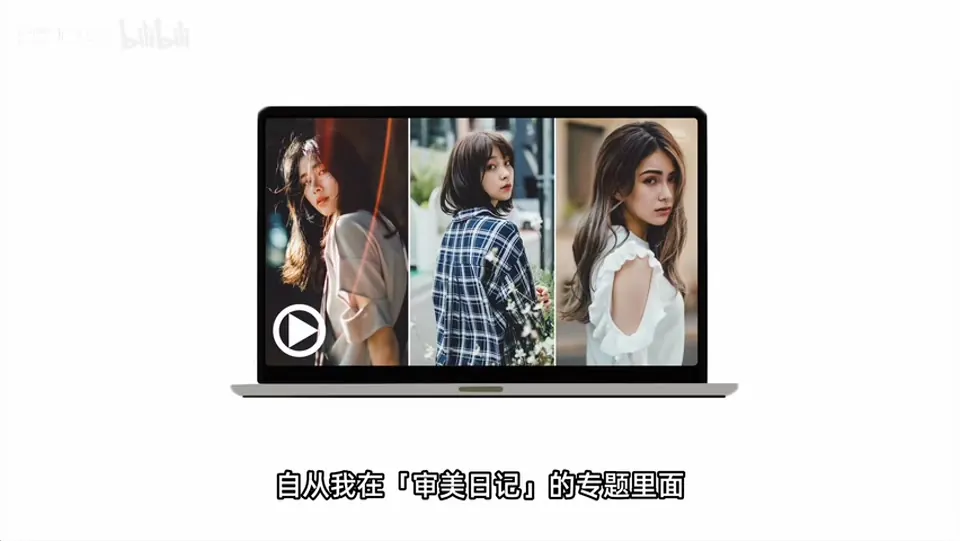 作品入口：人像风格预览 | 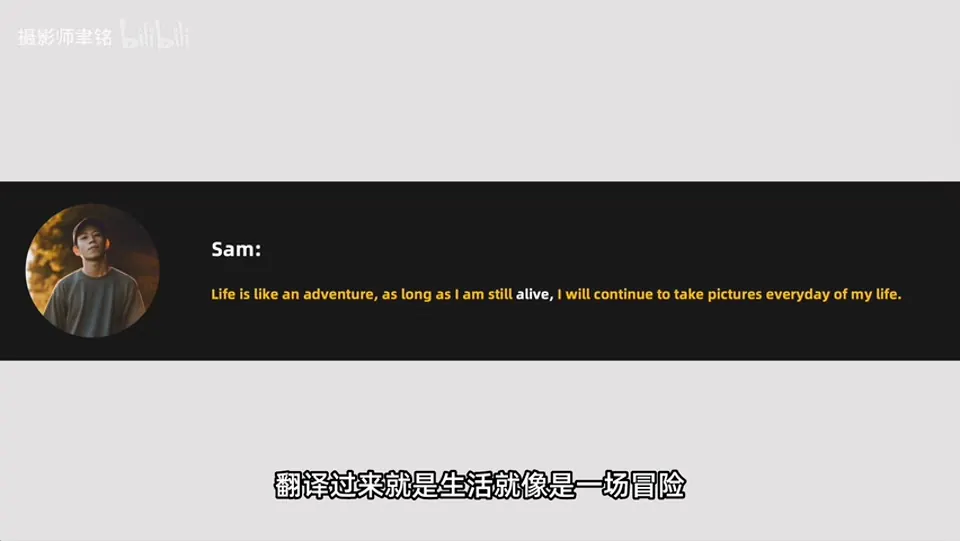 摄影观：生活像冒险 |
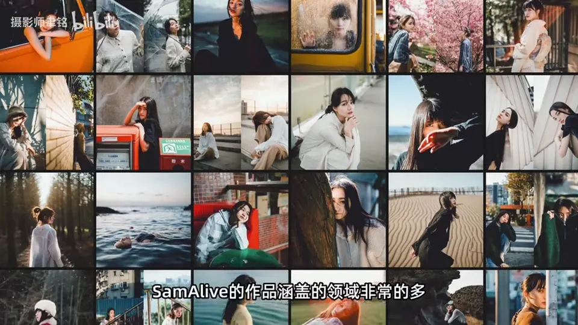 人像题材：颜色与情绪 | 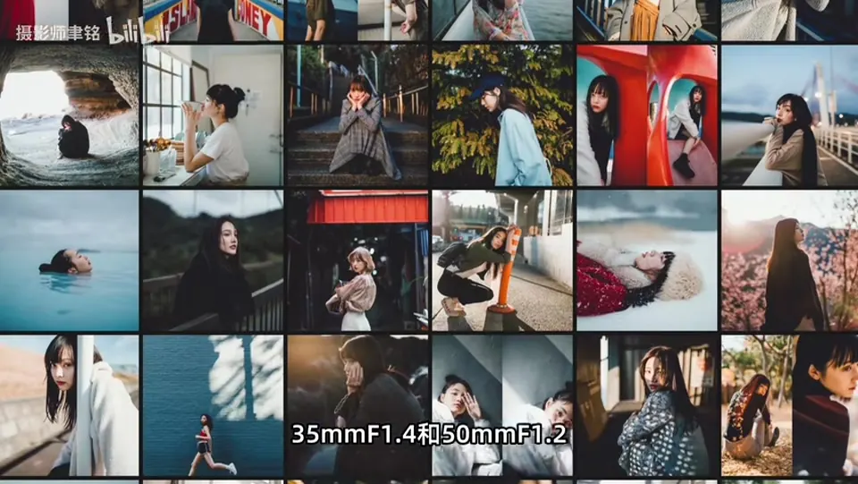 常用镜头：35mm 与 50mm |
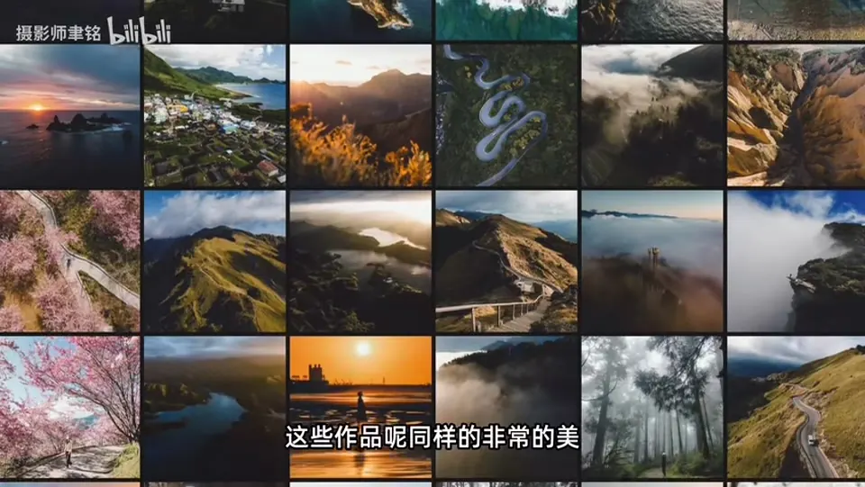 风光作品：质感与记忆点 | 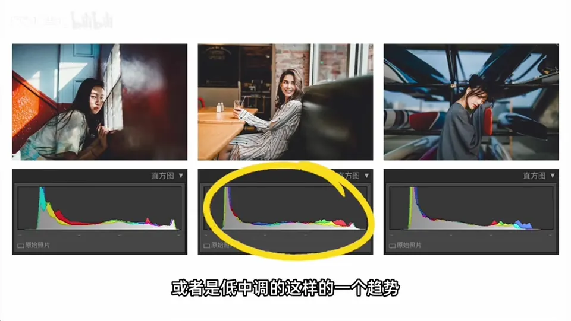 低中调直方图示例 |
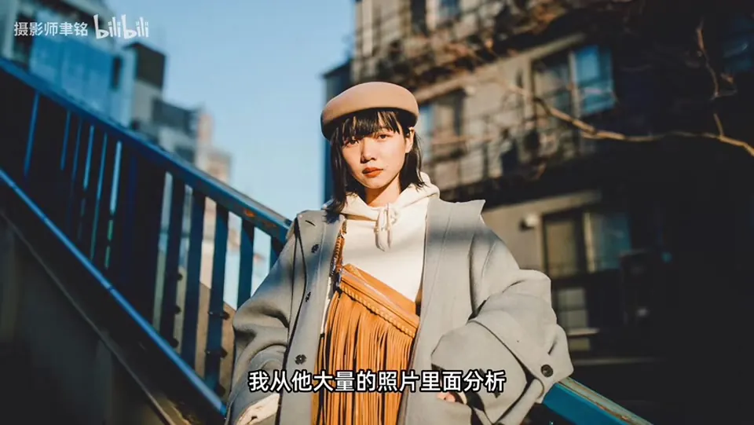 日出日落柔光 | 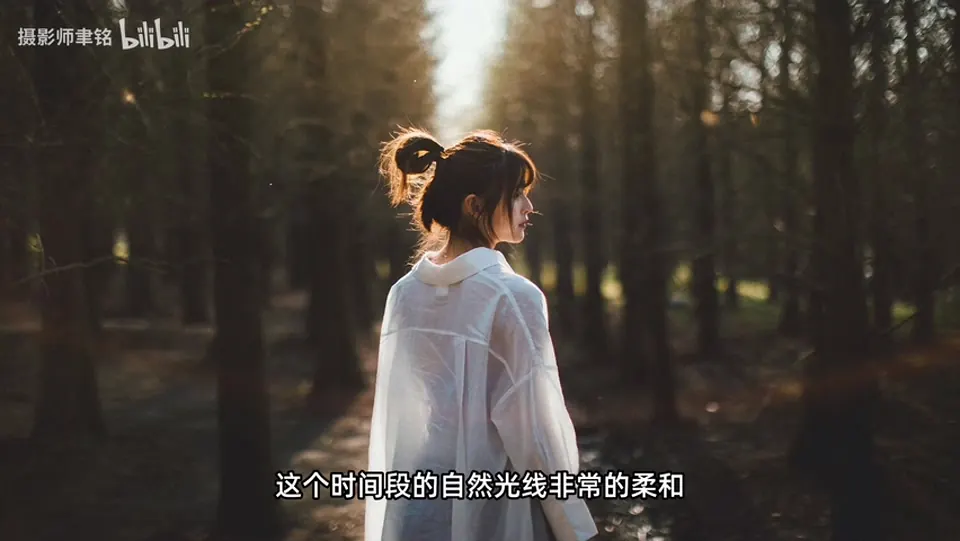 柔光人像质感 |
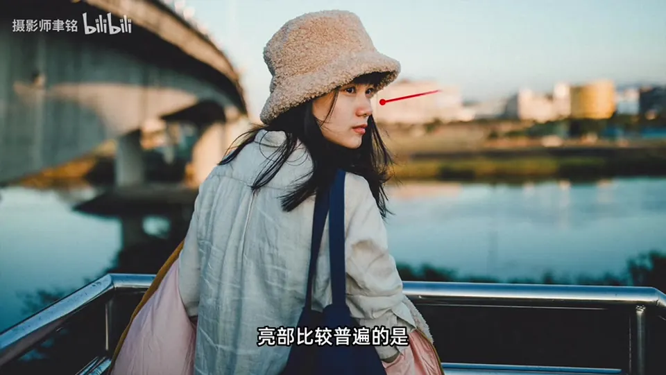 橙青色调人像 | 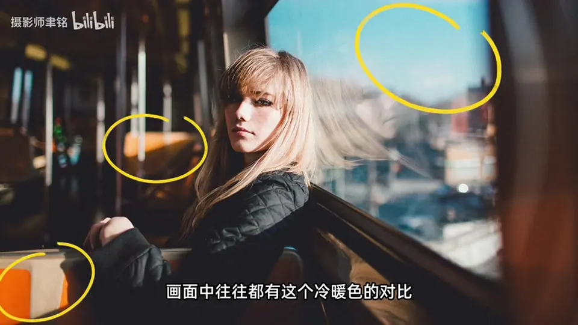 画面中的冷暖对比 |
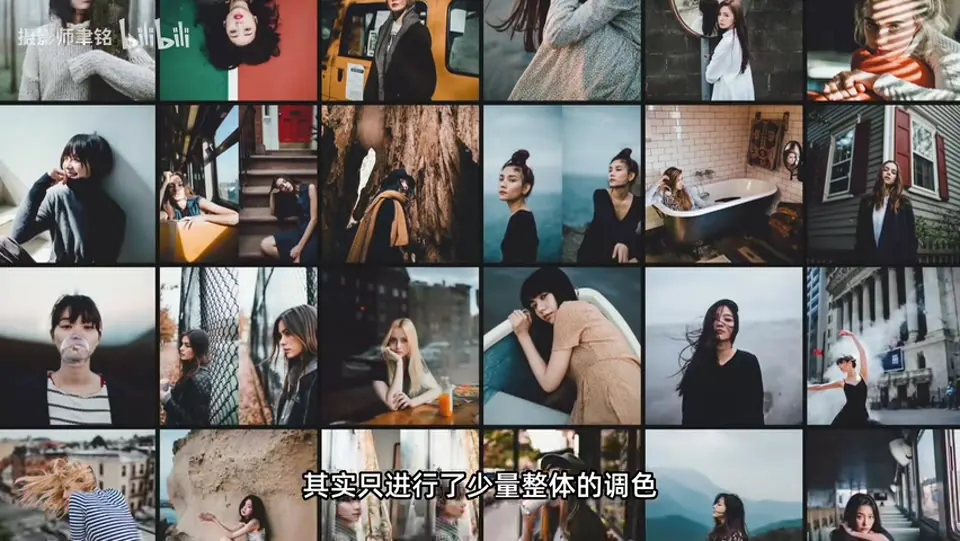 少量整体后期思路 | 
风格总结：内容/影调/色调 |
一页速览
风格核心 | SamAlive 的风格不是靠大幅度后期“拧出来”的，而是前期主题、光线、取景和后期少量整体调色共同形成。 |
主题特点 | 题材覆盖人像、风光和街头；人像颜色饱满、情绪浓厚，风光和街头也有很强的视觉记忆点。 |
影调特点 | 很多作品呈低长调或低中调，画面质感强、光影层次丰富；暗部和亮部常有缺失。 |
色调特点 | 亮部常呈橙黄色暖调，暗部偏淡青蓝冷调，整体有橙青色调和冷暖对比。 |
实操顺序 | 基础面板先纠正过曝和灰感，校准用“右右左”定橙青方向，HSL 只细修肤色，颜色分级给阴影/高光冷色，曲线做黑白端缺失，最后颗粒和局部蒙版收尾。 |
学习目标
能把 SamAlive 风格拆成主题、影调、色调、前期光线和后期策略。
理解低中调和低长调为什么会让画面更有质感。
能识别橙黄亮部与青蓝暗部构成的冷暖对比。
掌握基础面板从过曝原片建立可调基础的方法。
能用校准、HSL、颜色分级、明度曲线、颗粒和蒙版完成一套低调橙青仿色。
核心方法：五层拆解
维度 | 观察重点 | 本片结论 |
主题 | 题材范围、镜头语言和情绪。 | 人像、风光、街头都拍；人像颜色饱满、情绪浓厚，35mm 定焦是常用镜头。 |
前期 | 光线、拍摄时间和设备观。 | 偏好日出日落柔光；前期控制光线比后期补救更重要，设备以熟练使用为先。 |
影调 | 直方图位置和黑白端。 | 低长调或低中调，暗部和亮部一般缺失，光影层次丰富。 |
色调 | 亮部、暗部、整体冷暖关系。 | 亮部偏橙黄，暗部偏青蓝，形成耐看的橙青冷暖对比。 |
后期 | 调整幅度和策略。 | 不做大范围逐色调整，主要做整体定调和少量肤色、曲线、颗粒、局部修正。 |
Lightroom 实操流程
基础纠偏：原片过曝时先降曝光，高光和白色色阶继续降低，让亮部不再溢出。
找回细节：阴影适当提亮，让头发和树叶能看到细节；如果画面变灰，就压暗黑色色阶，让暗部更实、更通透。
色彩强度：饱和度略降、鲜艳度略升，让颜色更自然，不走低饱和路线。
相机校准：红、绿、蓝三原色色相按“右右左”调整，可快速得到类似橙青色调的方向。红色饱和度可略升，绿色饱和度要控制，蓝色可适度提高。
HSL 肤色：SamAlive 不做大范围逐色调整，因此 HSL 主要修橙色肤色：色相往黄、饱和度降低、明亮度提高，让肤色清新自然。
颜色分级：在阴影中注入少量蓝色，色相约 210；高光也可加一点冷色，色相约 225，让肤色更冷白、画面更舒服。
明度曲线：打点固定后，把暗部往上抬、亮部往下压，让直方图两端缺失，画面出现胶片灰的质感。
颗粒效果：加入一点颗粒感，并控制大小和粗糙度，增强胶片质感。
局部蒙版：如果要求更高，可用画笔让脸部略亮白、减黑色色阶、加清晰度；手臂皮肤可提亮并降低纹理，达到轻微磨皮效果。
工具速查表
工具 | 用途 | 本片操作 | 注意点 |
基础面板 | 修正曝光和灰感 | 降曝光、高光、白色；提阴影；压黑色色阶。 | 降高光提阴影后容易灰，黑色色阶是通透感开关。 |
饱和度/鲜艳度 | 控制整体色彩强度 | 饱和度略降，鲜艳度略升。 | SamAlive 不是低饱和，颜色要饱满但不俗。 |
校准 | 建立橙青方向 | 红右、绿右、蓝左；红饱和略升，绿饱和略降，蓝饱和略升。 | 先定大方向，后面才好做小修。 |
HSL | 只细修关键颜色 | 主要修橙色肤色。 | 不要逐个大改所有颜色，这不符合本片分析出的后期策略。 |
颜色分级 | 强化冷暖关系 | 阴影加蓝，高光加一点冷色。 | 给一点倾向即可，过量会假。 |
明度曲线 | 制造黑白端缺失 | 暗部上抬，亮部下压。 | 要看直方图两端是否真正离开边界。 |
颗粒 | 增加胶片质感 | 少量颗粒，控制大小和粗糙度。 | 颗粒服务质感，不要遮盖细节。 |
蒙版画笔 | 局部精修主体皮肤 | 脸部提亮、手臂提亮并降纹理。 | 局部操作要细，不要把皮肤刷得像塑料。 |
关键截图与讲解
图 01 | 00:35 | SamAlive 作品入口。
学习要点：教程从大量作品分析入手，而不是凭一两张图套参数。
图 02 | 01:45 | 生活像冒险的摄影观。
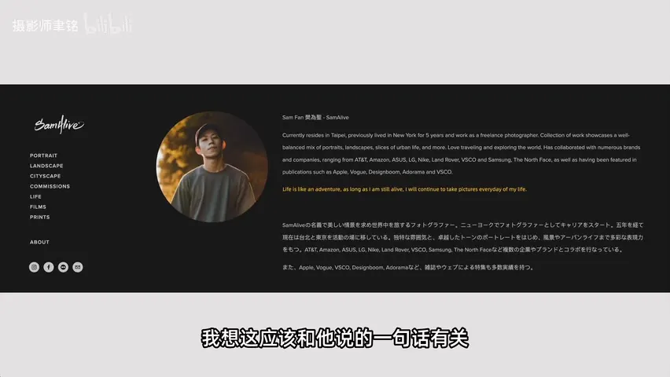
学习要点：理解摄影师的创作动机，有助于把握风格的灵魂。
图 03 | 03:08 | 主题、影调、色调三要素。
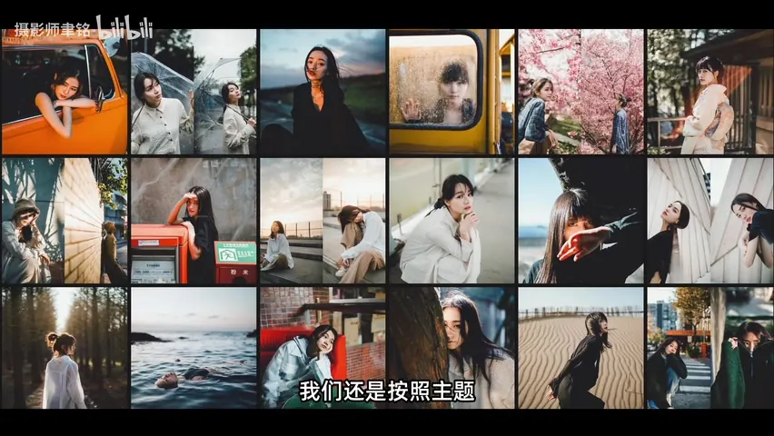
学习要点：本片按这三项拆解 SamAlive 风格。
图 04 | 03:31 | 人像题材与镜头。
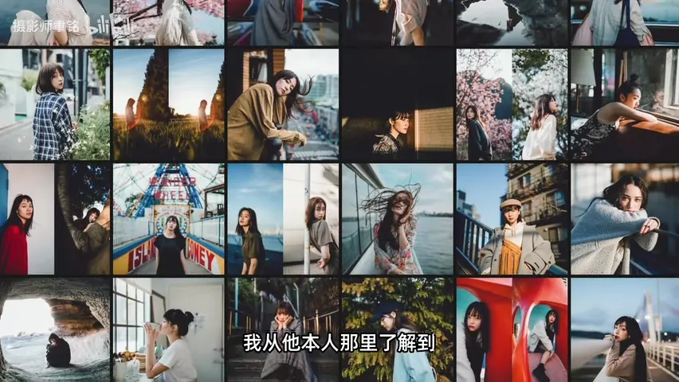
学习要点：常用 35mm f1.4 和 50mm f1.2，其中 35mm 最常用。
图 05 | 03:48 | 风光与街头作品。
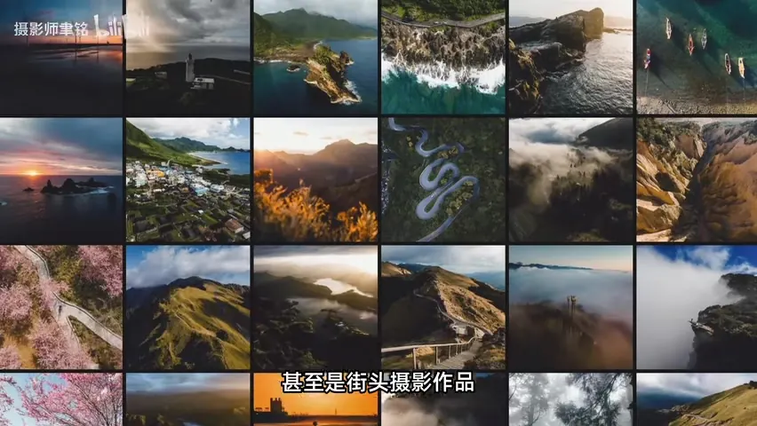
学习要点：SamAlive 不只拍人像，风光和街头同样有辨识度。
图 06 | 04:47 | 低长调/低中调直方图。
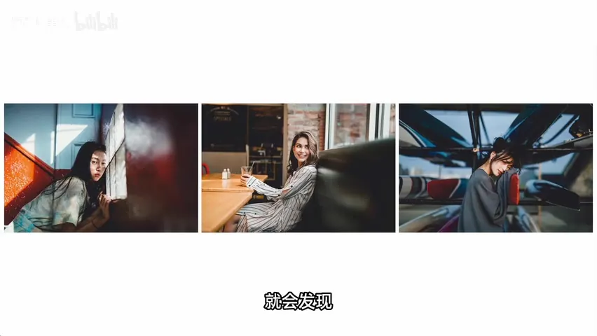
学习要点：与滨田英明的高亮风格相反，画面更有质感和层次。
图 07 | 05:24 | 日出日落柔光。
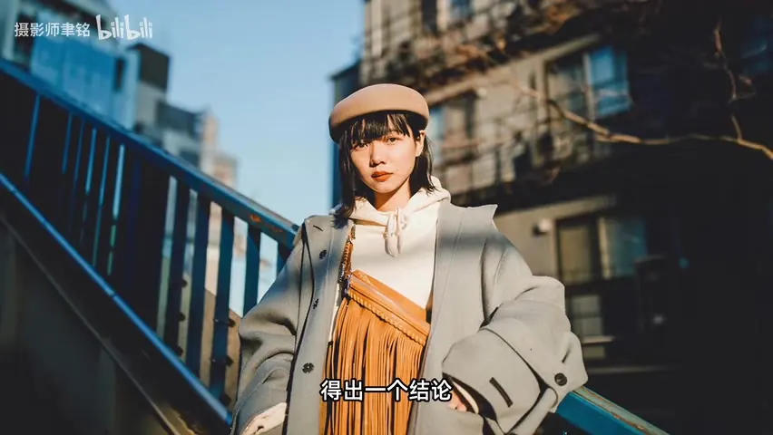
学习要点：前期光线控制是风格成立的关键。
图 08 | 06:31 | 橙黄亮部与青蓝暗部。
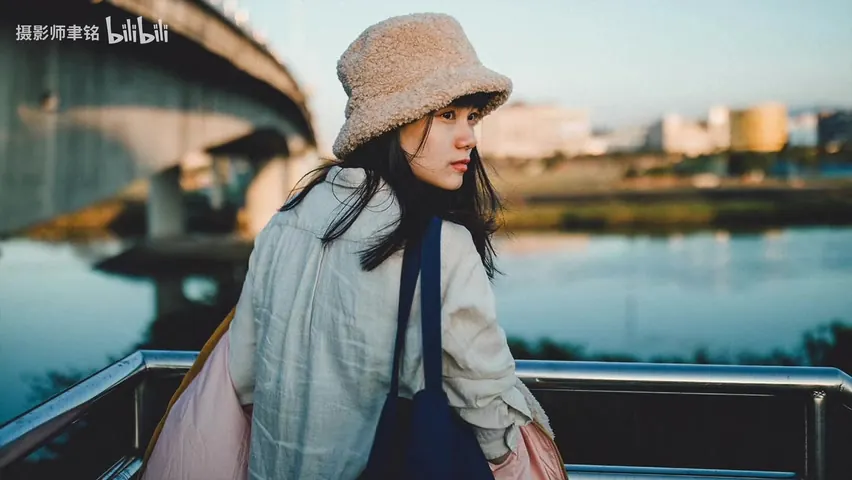
学习要点：冷暖对比是 SamAlive 色调耐看的核心。
图 09 | 07:01 | 后期策略：少量整体调色。
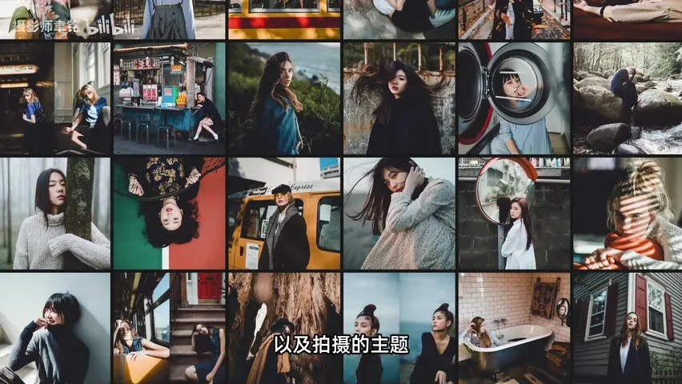
学习要点：不是大刀阔斧逐个改颜色，而是前期到位后轻量调整。
图 10 | 08:17 | 原片问题：亮部过曝。
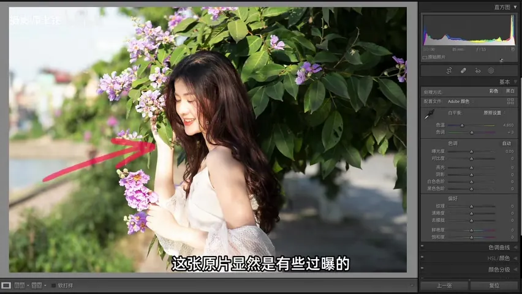
学习要点：先看直方图，高光几乎溢出，需要压下来。
图 11 | 08:29 | 降低曝光和高光白色。
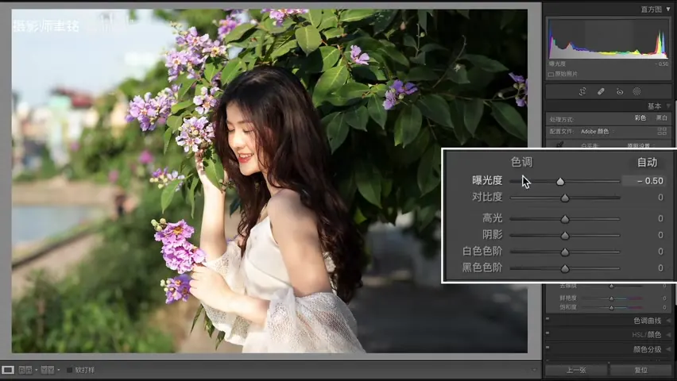
学习要点：先把亮部拉回可用范围。
图 12 | 09:02 | 黑色色阶让画面通透。
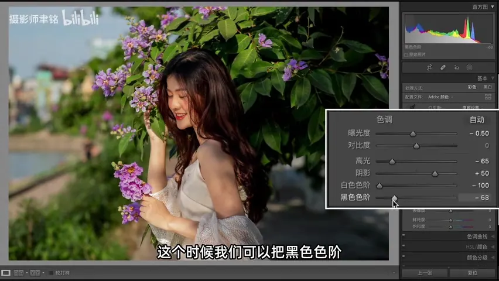
学习要点：提阴影后画面发灰，可压黑色色阶让暗部更实。
图 13 | 09:13 | 饱和度与鲜艳度。
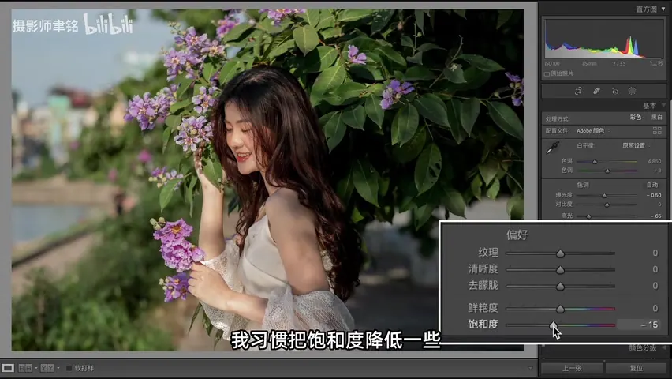
学习要点：降低饱和度、提高鲜艳度，让色彩自然又不寡淡。
图 14 | 09:43 | 校准：右右左。
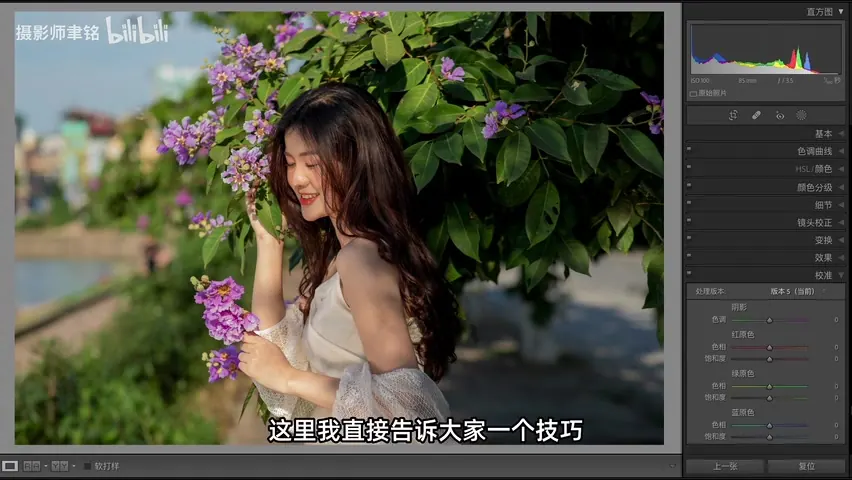
学习要点：三原色色相按右右左建立橙青色调。
图 15 | 10:15 | 校准饱和度微调。
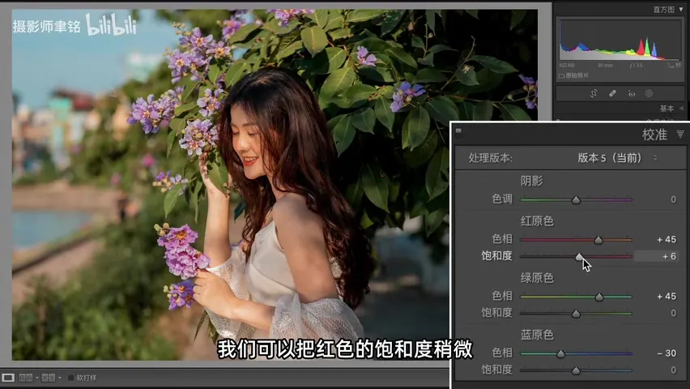
学习要点：红色饱和略升，绿色控制，蓝色适度提高。
图 16 | 10:47 | HSL 橙色修肤色。
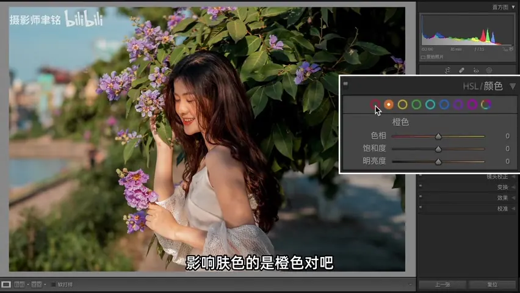
学习要点：色相往黄、饱和度降低、明亮度提高，肤色会更自然。
图 17 | 11:29 | 颜色分级：阴影加蓝。
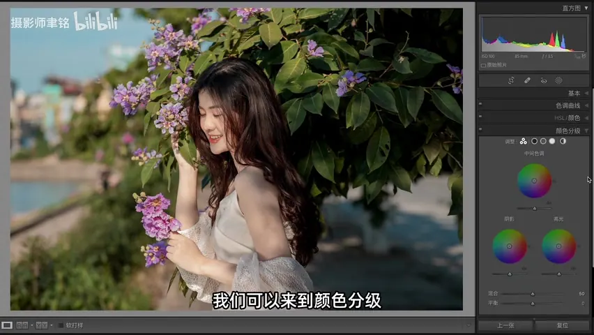
学习要点：让暗部呈淡青蓝冷调。
图 18 | 11:47 | 颜色分级：高光加冷色。
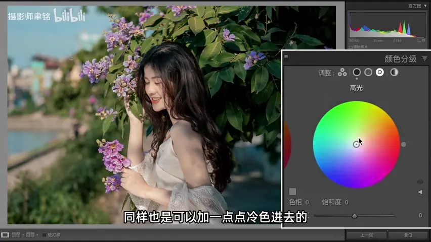
学习要点：让肤色更冷白一点，整体更舒服。
图 19 | 12:11 | 明度曲线：黑白端缺失。
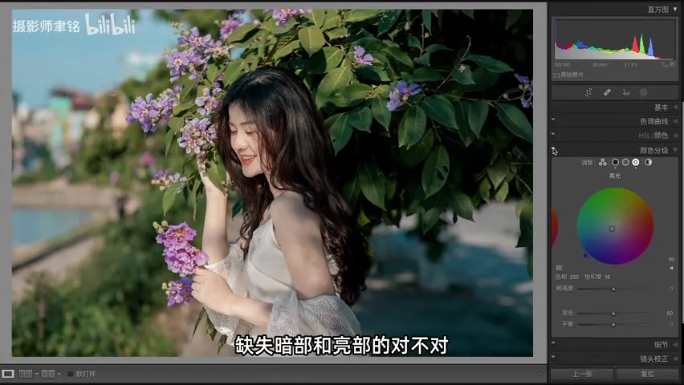
学习要点：暗部上抬、亮部下压，直方图两端离开边界。
图 20 | 12:40 | 颗粒：增强胶片质感。
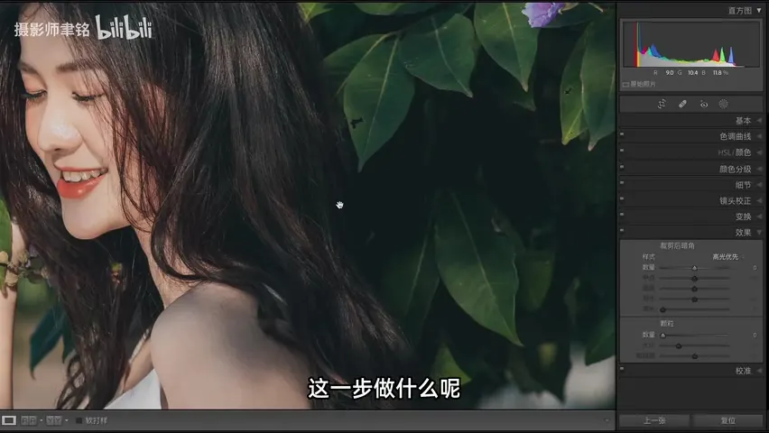
学习要点：颗粒大小和粗糙度要控制。
图 21 | 12:59 | 局部：脸部皮肤。
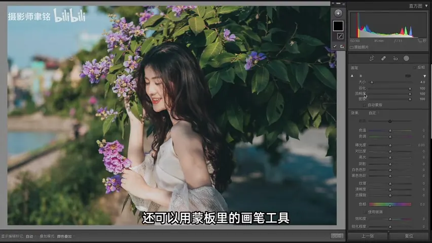
学习要点：画笔让脸部略亮白，并增强五官清晰度。
图 22 | 13:18 | 局部：手臂皮肤。
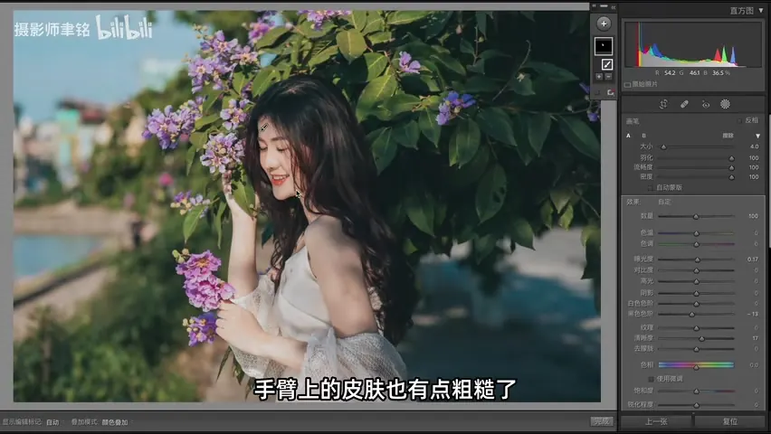
学习要点：提亮并降低纹理，做轻微磨皮。
图 23 | 13:45 | 最终对比。

学习要点：整体进入低中调橙青胶片感方向。
练习任务
选择一张日出、日落或柔光环境中的人像，先判断它是否具备 SamAlive 风格的前期基础。
用基础面板修正曝光：压高光白色、提阴影、压黑色色阶，建立低中调但不死黑的画面。
用校准右右左定大方向，再用红、绿、蓝饱和度微调橙青倾向。
只在 HSL 中重点修橙色肤色，不要把所有颜色都逐项大幅调整。
用颜色分级给阴影和高光加入轻微冷色，再用明度曲线做黑白端缺失。
最后加入颗粒，并用蒙版细修脸部和手臂皮肤，保存前后对比。
复盘清单
检查项 | 通过标准 |
前期基础 | 光线柔和，主题和环境有层次，素材不是完全靠后期硬救。 |
影调 | 偏低中调，暗部有质感但不死黑，高光不溢出。 |
直方图 | 黑白端略缺失，画面有胶片灰但不脏。 |
色调 | 亮部偏橙黄，暗部偏青蓝，冷暖对比自然。 |
肤色 | 通过橙色 HSL 修正后自然、干净、不过红。 |
后期幅度 | 没有大范围逐个改颜色，整体调整克制。 |
颗粒 | 有胶片质感，但主体细节仍可见。 |
局部 | 脸部和手臂修正自然，不像明显磨皮。 |
时间轴速查
时间 | 模块 | 重点 |
00:25-03:00 | 课程引入与背景 | 说明为什么要深入分析 SamAlive 的拍摄经历和创作观。 |
03:00-04:29 | 主题分析 | 人像、风光、街头；常用 35mm、50mm、24-70、16-35。 |
04:29-06:11 | 影调与前期 | 低长调/低中调，黑白端缺失，日出日落柔光，前期更重要。 |
06:13-07:48 | 色调与后期策略 | 橙黄亮部、青蓝暗部，冷暖对比，少量整体后期。 |
08:04-09:25 | 基础调整 | 降曝光、高光、白色；提阴影；压黑色；饱和度降、鲜艳度升。 |
09:27-10:38 | 相机校准 | 右右左定橙青方向，微调红绿蓝饱和度。 |
10:40-11:20 | HSL | 只修橙色肤色，其他颜色不大动。 |
11:21-12:03 | 颜色分级 | 阴影加蓝，高光加冷色。 |
12:03-12:50 | 曲线与颗粒 | 明度曲线黑白端缺失，加入颗粒。 |
12:50-13:45 | 局部与对比 | 画笔修脸部和手臂，查看前后对比。 |
全部图片
本页共保留 34 张来自 Word 的图片。上方正文中已按文档顺序展示，这里作为总览索引。